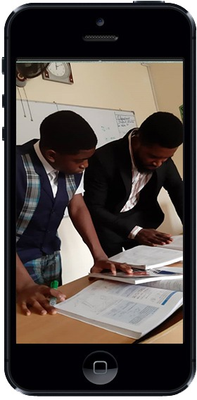

PROFESSIONAL TEACHERS
Student Centered Learning

OVER FOUR DECADE EXPERIENCE
A warm and safe environment


Our Nursery school run a broad, balanced, engaging, fun filled and exciting curriculum relevant to the needs of young children. We use the International Preschool Curriculum as a tool kit to learning alongside the Early Years Foundation Stage which encompasses seventeen unique learning goals and objectives to help drive the children development and learning. We Follow the IPC themes to provide learning full of activities, and real-life experiences that motivate children and provide a solid base for their future learning and development in all the key learning areas. Soft skills such as communication, listening, empathy, self control, problem solving, cooperation, adaptability, resilience, critical thinking and social skills is adopted into our character education programs to develop personal learning goals in the children preparing them as global citizens.
Our Primary Curriculum practices and engagement opportunities are hinged on the Principles and Objectives of the Cambridge Primary Curriculum, using the International Primary Curriculum as our Learning Tool Kit. The British curriculum forms the bedrock of our learning framework with the IPC (International Primary Curriculum) serving as a learning toolkit to enhance the quality of teaching and learning in the school. We believe the children are a part of a global community of learners and have to develop basic knowledge in their home and host countries experiences. As such, salient aspects of our history and communal life as a people, is drafted from the Nigerian National Curriculum to achieve a balance in the philosophies of Nigerian education which is to foster better human relationship, effective citizenship and national consciousness.
Our academic curriculum is a unique fusion of the Nigerian and British curricula. It provide the students with the skills, knowledge, experience and imaginative understanding for a lifetime of learning and enjoyment, as well as an awareness and respect for moral values and the community.
The school is divided into the Junior Secondary and Senior Secondary sections. In Junior School the students spend three years and take three end-of-course examinations; Basic Certificate of Education (BECE), ERC (FCTERC Exams) and Checkpoint, organized by Cambridge International Examination (CIE).
Students spend 3 years in Senior School. At the end of the second year (SS2) students sit for the International General Certificate of Secondary Education (IGCSE) examinations and in their final year (SS3) they take the West African Senior School Certificate Examination (WASSCE) organized by WAEC as well as The National Examination Council Examination (NECO).
A virtual learning environment (VLE) is a set of teaching and learning tools designed to enhance a student's learning experience by including computers and the Internet in the learning process. Are Danbo International we have taking a deliberate step towards ensuring learning through the web by using standard virtual learning tools. We maintain a portal that ensure that our students are involve in our learning process irrespective of distance.
To enhance the performance of our school with minimal effort, the schools maintain a standard school management system. Our students have a better academic experience, the can access their reports and record 24/7 through our school management system. The processing time for staffs are also reduce. This implies that more time are allocated to the students to increase academic performance.
G Suite for Education is a suite of free Google apps tailored specifically for schools. Deliver value with built-in, multi-layer security, and 24/7 support. Educators can provide instant feedback and track a student’s progress to improve performance. With powerful tools like Classroom, instructors can manage curriculum, assignments, and grading all in one place. Danbo International Schools has taken a step ahead by taken advantage of G-Suite to promote learning.
At Danbo International School, we are passionate about ensuring that students are able to use new technologies available to increase learning appetite and performance. We patronize E-library systems to make digital content available for our students. Our library also has computers which are available to our library users.
Learning groups are arranged in two key stages: Key stage one comprises learners ages 6 – 7 years (years 1 and 2) while key stage 2 accommodates learners in years 3 – 6 ages 8 – 12 years. At the end of key stage one, learners write the End of key stage SAT assessments to ascertain their learning exit on expected levels using the British attainment target profile. The learners are exposed to several certification examinations such as the CIPC (Cambridge International Primary Checkpoint Exams) — organized by the Cambridge International Examination (CIE) DFL.
The school is divided into the Junior Secondary and Senior Secondary sections. In Junior School the students spend three years and take three end-of-course examinations; Basic Certificate of Education (BECE), ERC (FCTERC Exams) and Checkpoint, organized by Cambridge International Examination (CIE).
Students spend 3 years in Senior School. At the end of the second year (SS2) students sit for the International General Certificate of Secondary Education (IGCSE) examinations and in their final year (SS3) they take the West African Senior School Certificate Examination (WASSCE) organized by WAEC as well as The National Examination Council Examination (NECO).
The educational aims for students with special needs are the same as those for all students. Our practitioners are trained to identify children with special needs and special barriers to learning, we proffer solutions through developing individual education plans to accommodate the children thereby creating equal platforms for learning for all our learners
Sixth-Form is a pre- university college where aspiring youths are nurtured with admirable character and blended with outstanding academic achievements. We run the following programmes:
Developing an engaging and positive learning environment for leaners is essential in a learning environment. We maintain a very conducive learning environment at Danbo International schools with many outstanding features.
Our Classrooms are organized with average class size of 10 students/ class. Our custodians ensure high standards of facility care and cleanliness.
When technology is integrated into lessons, students are expected to be more interested in the subjects they are studying. Technology provides different opportunities to make learning more fun and enjoyable in terms of teaching same things in new ways. At Danbo international schools, Technology characterizes our learning programme with 24/7 internet facility.At Danbo International School, we enjoy 24/7 electricity via our standard generators and inverters.